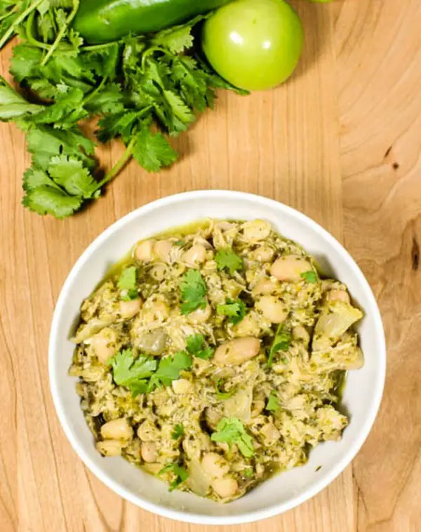

Instant Pot Green Chili Chicken and Rice

Dish Description
This is a great one-pot dish of green chili chicken and rice with 3 different types of chile pepper,
for the spice lovers out there!
Ingredients
- 1 tablespoon olive oil
- 1 boneless, skinless chicken breasts, cut into 1-inch pieces
- 1 tablespoon all-purpose flour
- 1 (7 ounce) can fire-roasted diced green chile peppers
- 1 (4 ounce) can diced jalapeno peppers
- 1 cup uncooked white rice
- 2/3 cup diced tomato
- 1/2 cup diced onion
- 1/2 cup diced Anaheim chile peppers
- 1/2 cup shredded Cheddar cheese
- 2 teaspoons salt, or to taste
- 1 teaspoon seasoned salt
- 1/2 teaspoon ground pepper
- 2 cups chicken stock
Cooking Steps
- Turn on the Instant Pot and select Saute. Add olive oil and chicken. Sprinkle with flour and cook
until browned on all sides, about 5 minutes. Turn off Saute. Add green chile peppers, jalapenos, rice,
tomato, onion, Anaheim chile, Cheddar cheese, salt, seasoned salt, and pepper; pour in chicken stock
and mix to combine.
- Close and lock the lid. Select high pressure and set timer for 18 minutes.
- Release pressure carefully using the quick-release method. Unlock and remove the lid. Adjust
seasoning with salt and pepper to taste. Enjoy!
Home Page